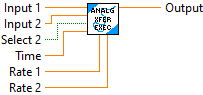

This function selects one of two inputs depending on the state of a third boolean input. The output will equal the selected input. When switching between input values the difference between the two inputs values at the time of the switched is ramped to zero at the rate defined by the input parameters. This provides a bumpless transfer function.
Inputs:
-- Input 1 -- double float -- Input Value 1
-- Input 2 -- double float -- Input value 2
-- Select 2 -- boolean -- When true Input Value 2 is selected. When false Input Value 1 is selected.
-- Rate 1 -- double float -- Rate (units/sec) used when transferring to Input 1 to remove the difference between inputs. If the value is zero, the value is switched immediately.
-- Rate 2 -- double float -- Rate (units/sec) used when transferring to Input 2to remove the difference between inputs. If the value is zero, the value is switched immediately.
Outputs:
-- Output -- double float -- Selected value.